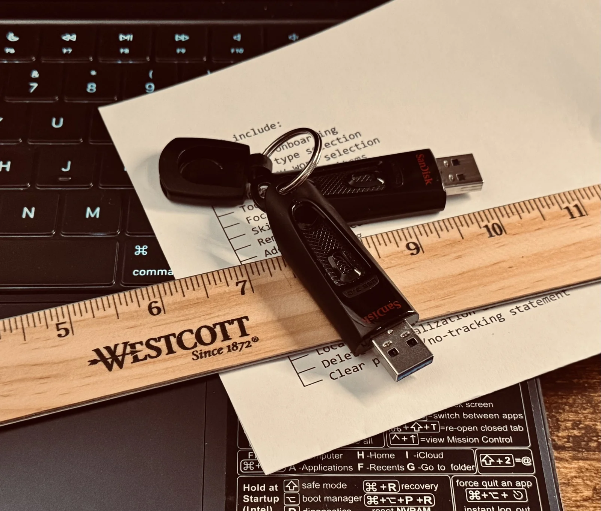

Dev Diary
June 27, 2026 · Brixel House
Making the case for a good Developer Diary in 2026
In the age of TikTok and instant communication, human writing and communication still remains one of the most authentic ways to share creative and personal information.
It would not be a stretch to presume that one of the first inventor's inventions was some sort of notebook, in order to keep track of ideas, thoughts, and progress.
Devlogs have long been a way to provide current state of projects and specific development efforts, documenting changes, adding reasoning and justifications, often presenting technical problems or challenges being faced, and next steps to provide continuity.
This is the purpose of Brixel's Devblog. The why is simple: to refocus effort and information in publicly available sources without dispersing focus across social media outlets.
A brief example: https://dl.acm.org/doi/10.1145/3772318.3790656
Catch you on the next one.